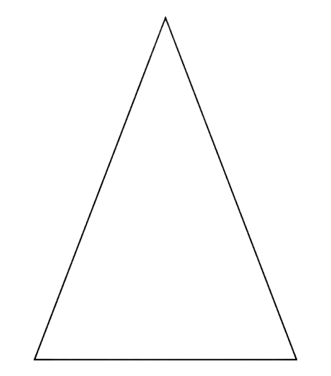
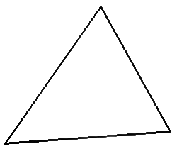
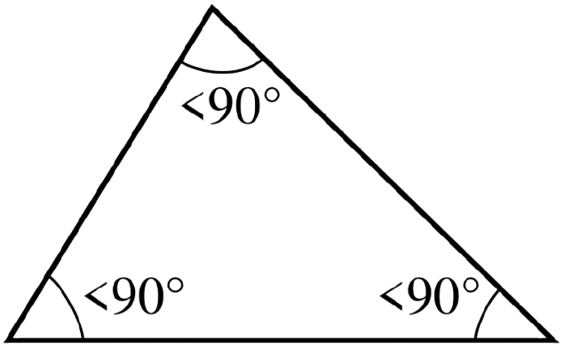
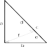
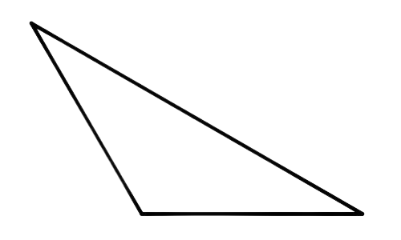
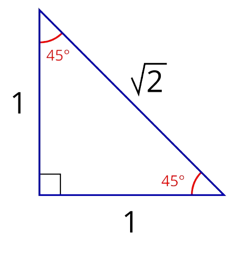
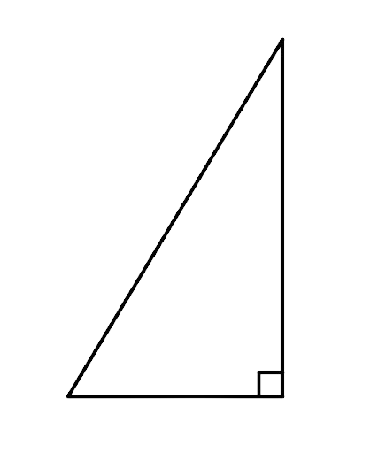

Виды треуглольников:
-
Равносторонний треугольник:
Определение: Треугольник, у которого все три стороны равны по длине.
Свойства: Все углы равностороннего треугольника также равны (по 60 градусов). -
Равнобедренный треугольник:
Определение: Треугольник, у которого две стороны равны по длине. Эти равные стороны называются боковыми сторонами, а третья сторона - основанием.
Свойства: Углы при основании равнобедренного треугольника равны. -
Разносторонний треугольник:
Определение: Треугольник, у которого все три стороны имеют разную длину.
Свойства: Все три угла разностороннего треугольника также имеют разную величину.


-

-
Остроугольный треугольник:
Определение: Треугольник, у которого все три угла являются острыми, то есть меньше 90 градусов. -
Прямоугольный треугольник:
Определение: Треугольник, у которого один из углов является прямым, то есть равен 90 градусам.
Стороны: Сторона, лежащая напротив прямого угла, называется гипотенузой, а две другие стороны называются катетами. -
Тупоугольный треугольник:
Определение: Треугольник, у которого один из углов является тупым, то есть больше 90 градусов.


Треугольник может одновременно относиться к разным категориям.
Например, можно встретить:
-

-
Равнобедренный прямоугольный треугольник:
Две стороны равны (равнобедренный) и один угол равен 90 градусам (прямоугольный). -
Равнобедренный остроугольный треугольник:
Две стороны равны (равнобедренный) и все углы меньше 90 градусов (остроугольный).

Один и тот же треугольник может быть одновременно классифицирован по сторонам и углам (например, равнобедренный прямоугольный треугольник). Знание видов треугольников и их свойств необходимо для решения геометрических задач и доказательства теорем. Существуют различные формулы для нахождения площади и периметра треугольников, которые зависят от его типа.
В заключение:
Треугольники являются одной из фундаментальных геометрических фигур. Понимание их свойств и классификации важно для изучения геометрии и решения практических задач.